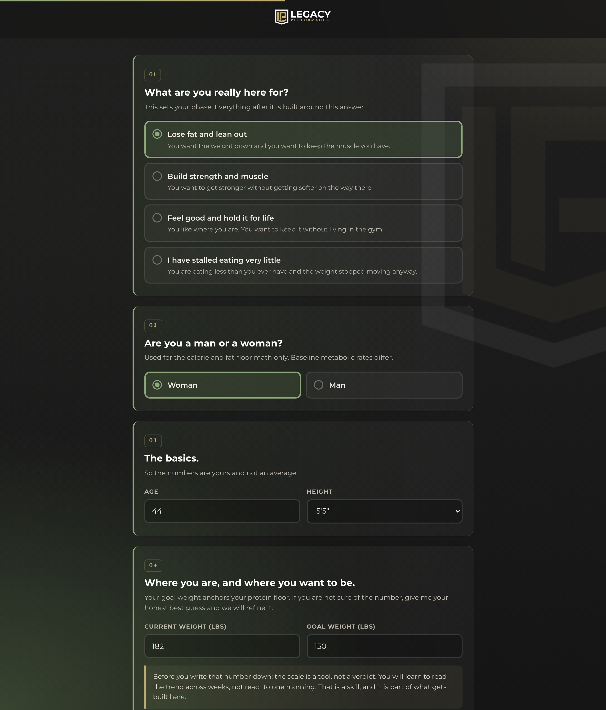
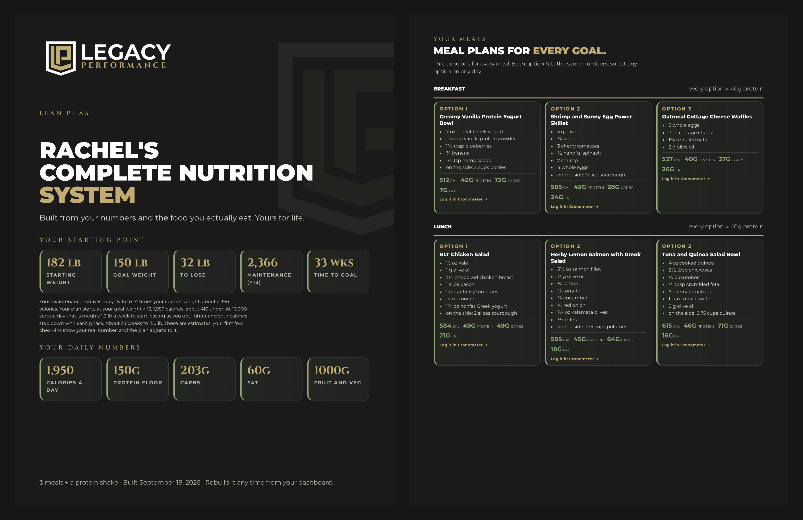
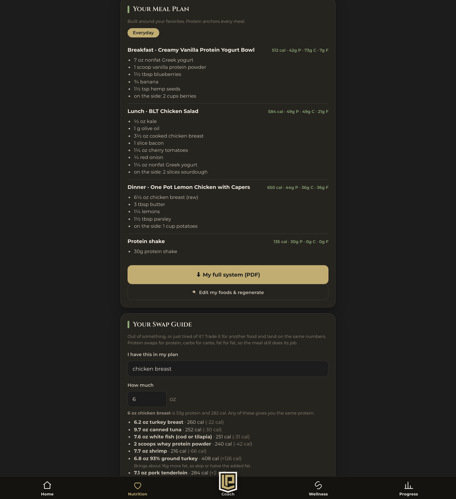
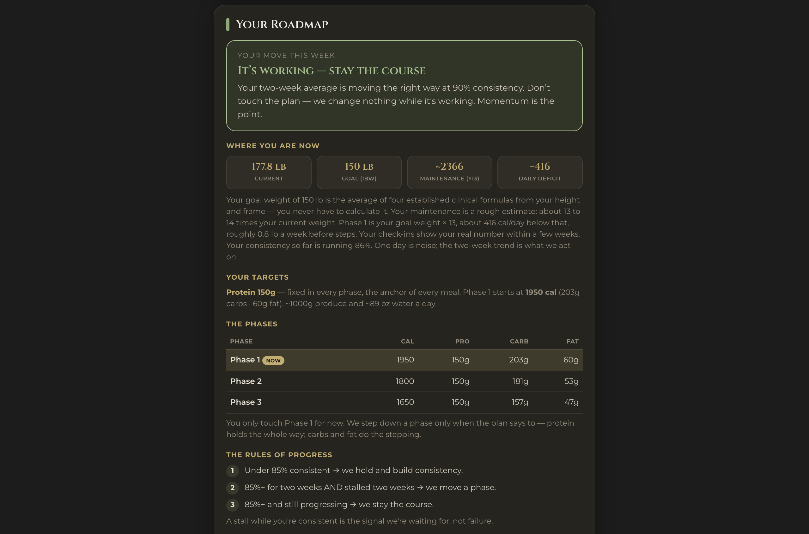

"There's no point starting now, not with the holidays."
The holidays aren't the obstacle. They're the test.
"I know what to do, I just don't do it."
You can't execute on what you can't see yet.
"I'm disciplined in every other area of my life."
You're right. You are.
Coming up
Three frameworks
The Awareness Circle Same sentence, opposite answers.
The Macro Freedom Framework The week you track hard so you can stop.
The Four Questions Where every diet you've run broke.
On January 1st, nothing changes.
Because there's nothing to restart.
Why me
I reverse engineered this from the clients who kept it
15+ years coaching. A decade competing in CrossFit, bodybuilding and powerlifting.
242 → 188. Below my wedding weight.
Coached through Graves', Hashimoto's, lupus, Crohn's, perimenopause. Alongside their doctors, never instead of them.
Pro bodybuilders, nationally ranked weightlifters, Muay Thai fighters, Fortune 500 CEOs, and stay-at-home moms.
Running it in public right now. 15 lb, 100 days, numbers posted every Wednesday.
IT IS NOT YOU.
You didn't fail six diets. You finished six diets, and nobody told you what came next.
Here's what almost everybody believes
"This is the worst possible time to start."
And it makes complete sense.
Halloween candy·Thanksgiving·The cookie exchange·The office party·Travel·Two weeks of kids home
If your plan needs a clean week, you should wait.
The next 100 days aren't the wrong time to start. They're the only honest test of whether you have a plan at all.
You don't test a roof in good weather.
The storm doesn't ruin the roof. The storm tells you whether you had one.
Real results
Kristen
Eating like a bird, fasting, and she had lost her menstrual cycle.
We went the other way. 1,400 → roughly 2,500 calories.
Cycle restored. Off a medication for a stretch. Real muscle rebuilt.
"I can track food again without obsessing over clean or dirty."
Real results
A client of mine
Believed she was eating 1,400. The real number was closer to 1,900.
~15 lbs in six months. Wine and dessert stayed in her life the whole time.
Walked away understanding food, with almost every restriction gone.
Real results
A woman in her 40s
On a low dose of supplementation, wanting to build rather than shrink.
165 → 162, and the scale is the least of it.
Less inflammation. Less joint pain. Training harder than in years.
The dose never went up.
Real results
A woman in her 60s
Convinced her gym time was wasted. Her body scan agreed with her.
Fat loss phase worked. Then her body started fighting back.
So we did less. A break, adjusted eating, pulled training back.
~25 lbs over the last year.
Real results
Doug
Biggest win wasn't the scale. It was his gut.
Tolerates far more food than he used to. Getting stronger.
Trains two to three times a week without fail.
Key One
The Awareness Circle
You don't have a knowledge problem.
You have an awareness problem.
You can't change what you can't see, and nobody ever showed you how to look.
Your body is a loop, not a checklist
SignalsEnergy, sleep, digestion, hunger, mood. Labs and DNA.
FuelWhat goes in.
OutputThe lever you pull, and the payoff that proves it.
RecoverySleep, stress, rest.
It closes
Grind one slice and the other three quietly undo it.
Why it's different
Every plan you've run
Keto. Whole30. Macros. Fasting. The app. The challenge.
They all prescribe before they observe.
The Awareness Circle
Seven honest days first. Then a plan built on what's actually there.
Observe, then prescribe.
That's the difference between medicine and guessing.
"I'm eating 1,400 calories and nothing is happening."
Woman one
Genuinely adapted.
She dieted hard and honestly for a decade. Her body lowered the floor.
Eat more. Rebuild the engine.
Woman two
Under-reporting by 300 to 500.
The oil, the sauces, the wine, the bites. None of it registered as a decision.
Learn to see it.
Get it backwards and you make it worse.
How it works
Three parts, in order
The seven-day read. Track honestly. Change nothing.
Sort the bucket. Your own data assigns your starting point.
Walk the circle. Signals, Fuel, Output, Recovery, in that order.
Proof
A woman in her 40s. Director. Mother first.
Came in at 313 lbs, leaning on supplementation and not much else.
We gave her something sustainable. Get to the gym. Get the steps in. That was it.
She took it from there and started meal prepping on her own.
20 lbs in 14 weeks. A steady straight line.
She weighed once a week at the start. As it started moving, she began looking more often. That's the awareness, and that's the part that lasts.
And on the weeks the scale slows down
She can still feel it
How her clothes fit.
Her energy.
How strong she feels.
In her own words: the lower back pain is gone. The knee pain is gone.
And on the craziest weeks in her schedule, she still gets to the gym, still gets her steps, still gets her protein in.
That is what it looks like when somebody stops reading one number and starts reading the whole circle.
Key Two
The Macro Freedom Framework
Structure first. Freedom second.
You track hard for one week so you never have to track like that again.
You don't get to eat by feel until the structure has made your feel accurate.
Both camps break in December
The rules camp
Keto, Whole30, clean eating, no carbs after six.
Breaks at your table, with your family.
The tracking camp
Macros, the app, weigh everything, log everything.
Breaks at somebody else's table.
Both require a clean week. There isn't one.
The holiday meal isn't a deviation from the plan. It's in the plan, before the week starts.
The four numbers
Off your goal weight, not your current one
Calories: goal weight × 13
Protein: 1 g per lb of goal weight (floor 0.8, never below, in any phase)
Produce: 600 to 800 g a day
Water: half your bodyweight in ounces
All four are starting points. Your own data sharpens them.
The free meals
Two a week. Built in.
A free meal is a meal where you eat pretty much whatever you want, and you don't track it.
Two rules, and they live outside the meal
Hit your protein floor from your other meals. If your floor is 120 grams, that's two meals at 50 each plus a shake. Then the free meal is genuinely free.
Get your 600 grams of fruit and veg across those same meals.
Three things inside the meal
A noticeable protein source.
A fruit or a vegetable. It does not have to be at the table. Eat it in the car on the way.
Stop at 80% full. You are not going to engorge yourself.
Nothing to count. Nothing to log. You earn it from the rest of the day.
Proof
Wine and dessert stayed in
Believed 1,400 to 1,500. Real number: 1,800 to 2,000.
Training three to five times a week.
~15 lbs in six months.
"Almost every restriction I was carrying is gone."
Key Three
The Four Questions
Your budget answers all four.
Run all three through the same four questions
Your budget
Your last diet
The Macro Freedom Framework
What do I measure?
Every dollar in and out
"Eat clean"
Calories and protein
How often do I look?
Weekly
When I feel brave
Two to three times a week
What do I do when it's off?
Move a line item
Try harder
Hold, adjust portions, or change phase
What happens at the goal?
It keeps running
It ends
You set the next oneMaintenance. Muscle. Or a break, then another 10 to 15 lbs.
A budget answers all four. Your last diet answered one.
A diet is not a system. It's a to-do list with an end date.
You didn't fail six diets.
You finished six diets, and nobody told you what came next.
How it works
Install the missing answers
Audit what you're running. Ten seconds. Uncomfortable.
Install the missing answers. Four numbers, a weekly rhythm, a written rule.
Answer question four before you need it.
When the scale stalls, you get a rule, not a feeling
Hold
Adjust portions
Change phase
A bad week is information, not an ending.
Fat loss is a season
ReverseThe on ramp. Rebuild the engine before you ask it to do anything.
Lean
Sustain
Strong
Sustain
The hinge
It sits on both sides. Not an accident.
For a lot of you, Reverse is the on ramp, and it sits outside the circle on purpose. You fix the engine first. Sustain is the hinge, and it is where you actually learn to maintain.
Proof
The winning move was doing less
A woman in her 60s. Gym time felt wasted, and her scan agreed.
Fat loss phase worked. Then her body fought back.
We took a break, moved calories, and pulled training back.
~25 lbs over the last year.
The only reason doing less was on the table is that she had a rule instead of a feeling.
One system. Three keys.
See it→Build it→Keep it running
The Awareness Circle · The Macro Freedom Framework · The Four Questions
What breaks when you pull one out
One without Two. A very well-documented bad month.
Two without One. Perfect execution, wrong direction.
One and Two without Three. Works great. For about nine weeks.
Not another diet. Diets end. This doesn't.
Are you the kind of person who's willing to do what it takes? Not next year. Now.
Do you build this on your own? Or do you do it with help?
What we just covered
The whole system
The Awareness Circle. See it.
The Macro Freedom Framework. Build it.
The Four Questions. Keep it running.
Two paths
Path one: build it yourself
Run your own seven-day read and read it yourself.
Do your own math on calories and protein.
Build your own rotation and free-meal math.
Write your own stall rule.
Free. The room is open. Come run it with us.
Path two: I build it for you
Your numbers set off your goal weight, on a call with me.
Your meals built and portioned, three options each.
Two free meals a week already inside the numbers.
Real orders at 48 chains, already sized.
Built for you. Yours for life.
Same 100 days. Two very different December 31sts.
Path two
The Legacy Performance Nutrition System
Not a meal plan. A meal plan only gets you to one goal.
This is the actual thing
You answer honestly. It builds from that.

What you're really here for. This sets your phase.
Where you are and where you want to be. Your goal weight anchors the protein floor.
The food you actually eat, the restaurants you actually go to.
About five minutes. You see everything that goes into it before you buy.
What's in it
I build it for you
Your numbers, off your goal weight
A week of real meals, three options each, with the recipes
One shopping list and a prep guide
Two free meals a week, built in
Real orders at 48 restaurant chains, and a swap guide
The whole thing printable, about 12 pages
Then we refine it over 30 days until it actually fits your week.
And you rebuild it any time your life changes. Forever.
And this is what comes back

The printed system

Your dashboard

The weekly read
$497. Once.
No subscription. Nothing renews. Yours for life. Klarna at checkout.
You're not tired of eating well. You're tired of deciding.
If you want the deeper version
Your genetics don't start your plan. They sharpen it.
The nutrition system works on its own. This is for the person who wants to stop guessing at the layer underneath it.
How you handle fat and carbsWhich split your body actually does better on, instead of trying both for a year.
Common nutrient gapsWhat your genetics suggest you may run short on, so supplementation stops being a guess.
Appetite and satiety signalsWhy "just eat less" has been harder for you than it looks from the outside.
Caffeine, and how you recoverWhat your training and your sleep should actually look like around it.
Educational coaching guidance, not medical advice, and never a diagnosis. It feeds your plan, not a prescription.
The Legacy Blueprint Bundle
The Blueprint and the Nutrition System
$1,494 apart
$997 together
Your genetics read, and the system built around what they say.
This is the upgrade, not a different door. If you just want the system, the system is the system.
This isn't for you if you want a meal plan you'll follow for six weeks and throw away.
Everything good about this is on the other side of using it as a system.
What's actually possible
Nobody reached for a bigger lever
Missy, 54. 1,400 calories and about to add cardio. Ended up near 2,000, training three days a week, dog walks for steps. Earned her pro card. Still eats waffles every Saturday, four years later.
A woman in her 40s. 165 → 162, and the scale is the least of it. Less inflammation, less joint pain, training harder than in years.
If you're in within 48 hours
The 100 Days Upgrade
Sept 29 → Dec 31
The LP Coach, unlocked. Your week read with you, not just once at the start.
The Last 100 Days Room. My real numbers posted weekly, next to yours.
Both gone Monday at noon. Nothing auto-bills. It's a switch with a date on it.
The first 30 days are the refinement window
I build it for you. Then we make it fit. You hate two of the meals, your Tuesdays are busier than you said, the portions feel wrong at breakfast. You tell me, I change it.
That is what the first month is for. It is not a refund window.
And if after all that it still isn't working? I refund you. No argument.
No subscription. Nothing renews on you.
And it credits forward if you ever apply and are accepted into Built 4 More.
Ten this round. Three gone. Seven left.
Because I build every one of them for you, by hand, and then refine it with you over 30 days.
October is the easiest month left on this year. A system built in December is installed in the middle of the storm.
dashboard.legacyperformance.co/build
Your numbers are free. About five minutes. No card.
The built version is the button at the end of that page.